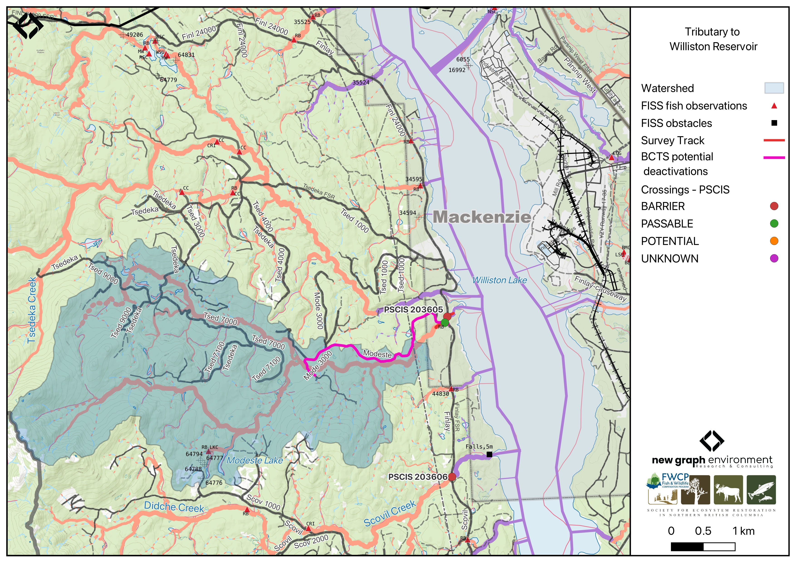
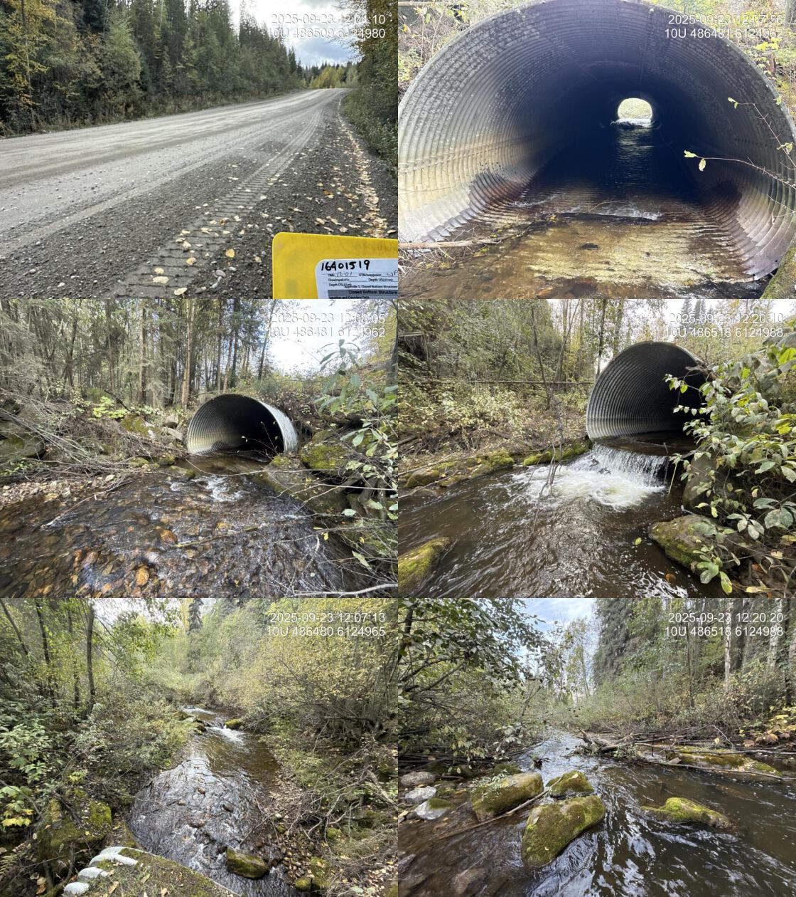
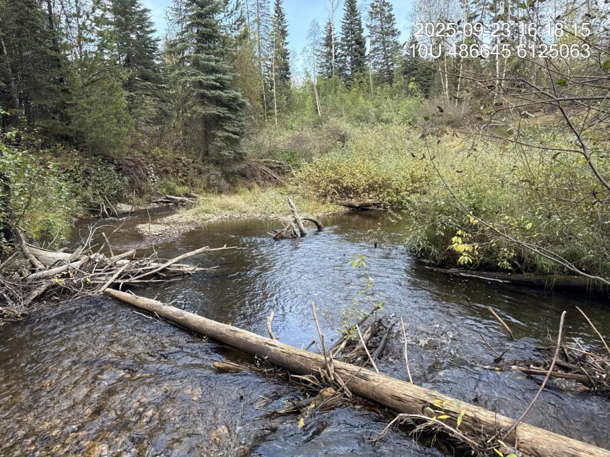
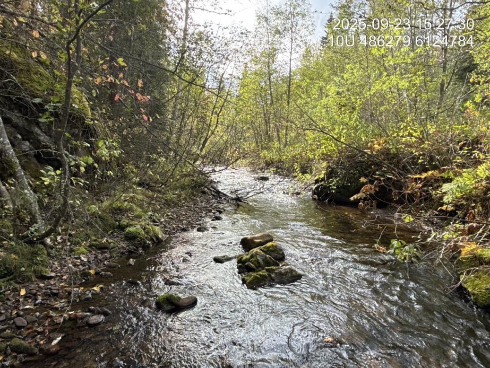
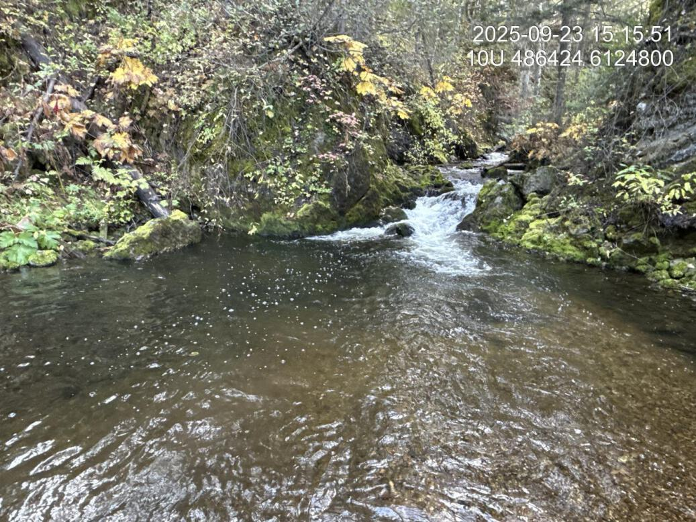

Tributary To Williston Reservoir - 203605 - Appendix
Site Location
PSCIS crossing 203605 is located on Tributary To Williston Reservoir, on the western side of the reservoir, approximately 10km southeast of MacKenzie, BC, in the Parsnip Arm watershed group (Figure 5.25). The crossing is located 1.3m upstream of the stream’s confluence with the Williston Reservoir on Finlay FSR road which is the responsibility of the Ministry of Forests.
my_caption <- "Map of Tributary To Williston Reservoir"
knitr::include_graphics("fig/gis/map_trib_to_willis_res.jpeg")
Figure 5.25: Map of Tributary To Williston Reservoir
Background
At PSCIS crossing 203605, Tributary To Williston Reservoir is a fourth order stream and drains a watershed of approximately 55.6km2. The watershed ranges in elevation from a maximum of 1644m to 681m near the crossing (Table 5.21).
This was the first assessment of PSCIS crossing 203605, selected because it is located very close to Williston Reservoir, which supports documented bull trout. Approximately 35km of bull trout rearing habitat is modelled upstream with no additional modelled barriers, and rainbow trout have previously been recorded in the system (Norris [2018] 2024; MoE 2024a).The stream exhibited high-quality habitat, therefore a habitat confirmation was completed.
Approximately 215m upstream of Finlay FSR, the stream crosses Modeste FSR at a bridge, which was also assessed for the first time in 2025 (PSCIS crossing 203611). Modeste FSR provides access to the lower half of the watershed, and is identified by BC Timber Sales as a potential deactivation candidate.
A summary of habitat modelling outputs for the crossing are presented in Table 5.22.
fpr::fpr_table_wshd_sum(site_id = my_site) |>
fpr::fpr_kable(caption_text = paste0('Summary of derived upstream watershed statistics for PSCIS crossing ', my_site, '.'),
footnote_text = 'Elev P60 = Elevation at which 60% of the watershed area is above',
scroll = F)| Site | Area Km | Elev Site | Elev Min | Elev Max | Elev Median | Elev P60 | Aspect |
|---|---|---|---|---|---|---|---|
| 203605 | 55.6 | 681 | 671 | 1644 | 980 | 937 | SE |
| * Elev P60 = Elevation at which 60% of the watershed area is above |
| Habitat | Potential | Remediation Gain | Remediation Gain (%) |
|---|---|---|---|
| BT Rearing (km) | 35.9 | 30.8 | 86 |
| BT Spawning (km) | 22.0 | 19.5 | 89 |
| BT Network (km) | 100.5 | 76.4 | 76 |
| BT Stream (km) | 86.7 | 64.1 | 74 |
| BT Lake Reservoir (ha) | 51.1 | 42.4 | 83 |
| BT Wetland (ha) | 51.9 | 50.3 | 97 |
| BT Slopeclass03 (km) | 16.3 | 14.4 | 88 |
| BT Slopeclass05 (km) | 21.8 | 10.4 | 48 |
| BT Slopeclass08 (km) | 17.6 | 12.2 | 69 |
| BT Slopeclass15 (km) | 28.2 | 24.4 | 87 |
| * Model data is preliminary and subject to adjustments. |
Stream Characteristics at Crossing 203605
At the time of the 2025 assessment, PSCIS crossing 203605 on Finlay FSR was un-embedded, non-backwatered and ranked as barrier to upstream fish passage according to the provincial protocol (MoE 2011) (Table 5.23). The culvert had a 0.95m outlet drop and a 0.5m deep outlet pool.
The water temperature was 6.8\(^\circ\)C, pH was 7.6 and conductivity was 251 uS/cm.
| Location and Stream Data |
|
Crossing Characteristics | – |
|---|---|---|---|
| Date | 2025-09-23 | Crossing Sub Type | Round Culvert |
| PSCIS ID | 203605 | Diameter (m) | 3.9 |
| External ID | 16401519 | Length (m) | 46 |
| Crew | AI | Embedded | No |
| UTM Zone | 10 | Depth Embedded (m) | – |
| Easting | 486504 | Resemble Channel | – |
| Northing | 6124990 | Backwatered | No |
| Stream | Tributary To Williston Reservoir | Percent Backwatered | – |
| Road | Finlay FSR | Fill Depth (m) | 2.5 |
| Road Tenure | MoF | Outlet Drop (m) | 0.95 |
| Channel Width (m) | 6 | Outlet Pool Depth (m) | 0.5 |
| Stream Slope (%) | 2 | Inlet Drop | No |
| Beaver Activity | No | Slope (%) | 2 |
| Habitat Value | High | Valley Fill | Deep Fill |
| Final score | 37 | Barrier Result | Barrier |
| Fix type | Replace with New Open Bottom Structure | Fix Span / Diameter | 15 |
| Comments: High value habitat on very large system with pipe that has large outlet drop near 1m. Habitat confirmation and eDNA sampling conducted upstream and downstream of the crossing. | |||
| Photos: From top left clockwise: Road/Site Card, Barrel, Outlet, Downstream, Upstream, Inlet. | |||
|
 |
Stream Characteristics Downstream of Crossing 203605
The stream was surveyed downstream from crossing 203605 for 250m to the mapped reservoir location, where the channel retained stream characteristics at the time of assessment (Figure 5.26). Abundant gravels and cover were present throughout, with numerous run sections providing suitable rearing habitat for juvenile westslope cutthroat trout and rainbow trout. No barriers to fish passage were observed in the area surveyed and the habitat was rated as high value for salmonid spawning and rearing. The dominant substrate was gravels with fines sub-dominant.Total cover amount was rated as moderate with dominant. Cover was also present as large woody debris and overhanging vegetation.The average channel width was 8.5m, the average wetted width was 5.6m, and the average gradient was 1.8%.
Stream Characteristics Upstream of Crossing 203605
The stream was surveyed upstream from crossing 203605 for 650m (Figure 5.27). The habitat was rated as high value. The average channel width was 6.7m, the average wetted width was 4.6m, and the average gradient was 2.9%.Total cover amount was rated as moderate with undercut banks dominant. Cover was also present as small woody debris, large woody debris, boulders, deep pools, and overhanging vegetation.The dominant substrate was gravels with cobbles sub-dominant. The stream was large with complex habitat and diverse cover including deep pools, boulders, large and small woody debris, and undercut banks. A canyon section ~100m long occurred ~100m upstream of the Modeste FSR bridge, containing multiple cascade steps up to 1m high with deep downstream pools. At the upstream end of the site, the channel deflected against steep gully walls. Abundant gravels were present, suitable for adfluvial and resident rainbow trout as well as bull trout.
##this is useful to get some comments for the report
form_edna |>filter(site == my_site & location == 'ds') |>pull(comments_field)
form_edna |>filter(site == my_site & location == 'ds') |>pull(comments_lab)
form_edna |>filter(site == my_site & location == 'us') |>pull(comments_field)
form_edna |>filter(site == my_site & location == 'us') |>pull(comments_lab)
# form_edna |>filter(site == my_site2 & location == 'ds') |>pull(comments_field)
# form_edna |>filter(site == my_site2 & location == 'ds') |>pull(comments_lab)
#
#
# form_edna |>filter(site == my_site2 & location == 'us') |>pull(comments_field)
# form_edna |>filter(site == my_site2 & location == 'us') |>pull(comments_lab)Environmental DNA
eDNA samples were collected both upstream and downstream of crossing 203605 on Finlay FSR, with sampling techniques summarized in Table 5.24. Samples were submitted to UNBC for ddPCR analysis against Bull Trout, Arctic Grayling, Rainbow Trout, and Kokanee assays. Per-position results are summarized in Table 5.25. Detections are based on the standard ddPCR call threshold of ≥4 positive droplets; format is CODE(max_droplets), with * flagging samples UNBC reran. Sub-threshold signals (1-3 droplets) are tracked separately as they are not interpretable as species presence per ddPCR convention.
my_caption <- paste0("Summary of eDNA samples collected at site ", my_site, ".")
tab_edna |>
dplyr::filter(site == my_site) |>
dplyr::select(-site) |>
dplyr::arrange(Site) |>
fpr_kable(caption_text = my_caption, scroll = FALSE)| Site | Stream | Habitat Type | Sample Method | Filter Type | Filter Size (um) | Volume filtered (L) | Site Description |
|---|---|---|---|---|---|---|---|
| 203605_ds_ed1 | Tributary To Williston Reservoir | riffle | grab | mce | 1 | – | Sample collected 15m downstream of the culvert outlet on the right bank |
| 203605_us_ed1 | Tributary To Williston Reservoir | riffle | instream | mce | 1 | 2 | Approximately 45 m upstream of culvert inlet on the left bank |
edna_results_203605 |>
fpr::fpr_kable(
caption_text = paste0("eDNA detection results at crossing ", my_site, "."),
scroll = FALSE
)| Site ID | UNBC ID | Detected | Sub-threshold | Not detected |
|---|---|---|---|---|
| 203605_ds_ed1 | M41368 | RAIN(455) | BULT(3)* | GRAY(0), SOCK(0) |
| 203605_us_ed1 | M41369 | RAIN(429) | BULT(1) | GRAY(0), SOCK(0) |
Site-level detail across all sampled crossings is in Appendix - Environmental DNA Results. The interactive Peace eDNA map shows toggleable per-species layers.
Structure Remediation and Cost Estimate
Should restoration/maintenance activities proceed, replacement of the Finlay FSR crossing (203605) with a bridge (15m span) is recommended. At the time of reporting in 2026, the cost of the work is estimated at $450,000.
Conclusion
The habitat upstream of PSCIS crossing 203605 on Finlay FSR was documented as high value for salmonid spawning and rearing, and the crossing is rated as a high priority for replacement due to the large outlet drop. There is a significant amount of bull trout rearing habitat modelled upstream, and since the road that provides access to lower half of the may be deactivated, this crossing could be a good candidate for replacement.
tab_hab_summary |>
dplyr::filter(Site %in% c(my_site)) |>
fpr::fpr_kable(caption_text = paste0("Summary of habitat details for PSCIS crossing ", my_site, "."),
scroll = F) | Site | Location | Length Surveyed (m) | Average Channel Width (m) | Average Wetted Width (m) | Average Pool Depth (m) | Average Gradient (%) | Total Cover | Habitat Value |
|---|---|---|---|---|---|---|---|---|
| 203605 | Downstream | 250 | 8.5 | 5.6 | 0.2 | 1.8 | moderate | high |
| 203605 | Upstream | 650 | 6.7 | 4.6 | 3.7 | 2.9 | moderate | high |
my_photo1 = fpr::fpr_photo_pull_by_str(str_to_pull = 'ds_typical_2_')
my_caption1 = paste0('Typical habitat downstream of PSCIS crossing ', my_site, '.')
Figure 5.26: Typical habitat downstream of PSCIS crossing 203605.
my_photo2 = fpr::fpr_photo_pull_by_str(str_to_pull = 'us_typical_2_')
my_caption2 = paste0('Typical habitat upstream of PSCIS crossing ', my_site, '.')
Figure 5.27: Typical habitat upstream of PSCIS crossing 203605.
my_caption <- paste0('Left: ', my_caption1, ' Right: ', my_caption2)
knitr::include_graphics(my_photo1)
knitr::include_graphics("fig/pixel.png")
knitr::include_graphics(my_photo2)my_photo1 = fpr::fpr_photo_pull_by_str(str_to_pull = 'us_pool')
my_caption1 = paste0('Beginning of the canyon with multiple cascade steps and deep downstream pools, located above of the Modeste FSR bridge, upstream of crossing ', my_site, '.')
Figure 5.28: Beginning of the canyon with multiple cascade steps and deep downstream pools, located above of the Modeste FSR bridge, upstream of crossing 203605.